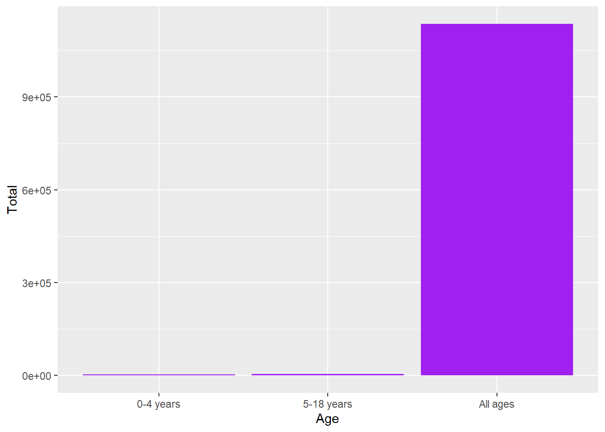
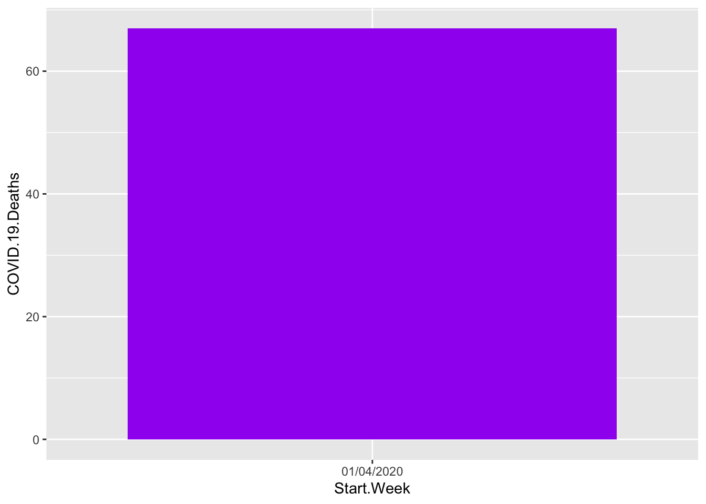
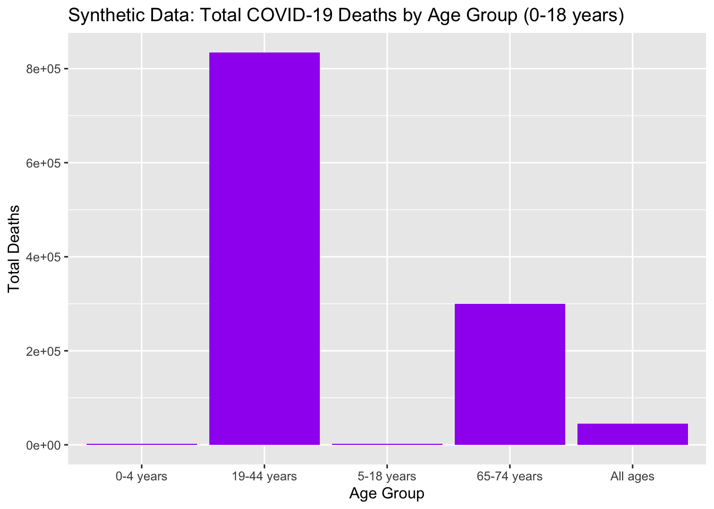
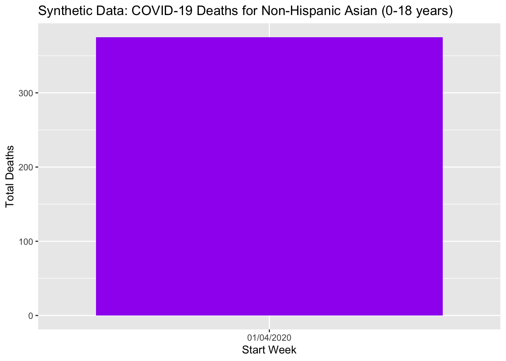

set.seed(200)
library(dplyr)
Attaching package: 'dplyr'The following objects are masked from 'package:stats':
filter, lagThe following objects are masked from 'package:base':
intersect, setdiff, setequal, unionlibrary(ggplot2)Vinayak Revisanker
Deaths due to COVID from ages 0-18. Downloaded from the CDC website https://data.cdc.gov/NCHS/Provisional-COVID-19-Deaths-Focus-on-Ages-0-18-Yea/nr4s-juj3/data_preview
Libraries
Attaching package: 'dplyr'The following objects are masked from 'package:stats':
filter, lagThe following objects are masked from 'package:base':
intersect, setdiff, setequal, unionDeaths = read.csv("Provisional_COVID-19_Deaths__Focus_on_Ages_0-18_Years.csv", header=TRUE)
dplyr::glimpse(Deaths)Rows: 29
Columns: 8
$ Data.as.of <chr> "06/28/2023", "06/28/2023", "06/28/2023"…
$ Age.group <chr> "0-4 years", "5-18 years", "19-44 years"…
$ COVID.19.Deaths <int> 776, 1071, 44690, 230021, 254951, 604543…
$ Indicator <chr> "Age", "Age", "Age", "Age", "Age", "Age"…
$ Sex <chr> "All", "All", "All", "All", "All", "All"…
$ Race.or.Hispanic.Origin.Group <chr> "All", "All", "All", "All", "All", "All"…
$ Start.Week <chr> "01/04/2020", "01/04/2020", "01/04/2020"…
$ End.Week <chr> "06/24/2023", "06/24/2023", "06/24/2023"…Shows the the total amount of deaths from covid between ages 0-18
result = Deaths %>%
group_by(Age = as.factor(Age.group)) %>%
summarize(Total = sum(COVID.19.Deaths)) %>%
arrange(desc(Total)) %>%
filter(Age != "19-44 years") %>%
filter(Age != "45-64 years") %>%
filter(Age != "65-74 years") %>%
filter(Age != "75 years and over") %>%
top_n(10, wt = Total)
ggplot(result, aes(x=Age, y=Total))+
geom_bar(stat = "identity", fill = "Purple")
Seperating Race
Data.as.of Age.group COVID.19.Deaths Indicator
Length:2 Length:2 Min. :26.00 Length:2
Class :character Class :character 1st Qu.:29.75 Class :character
Mode :character Mode :character Median :33.50 Mode :character
Mean :33.50
3rd Qu.:37.25
Max. :41.00
Sex Race.or.Hispanic.Origin.Group Start.Week
Length:2 Length:2 Length:2
Class :character Class :character Class :character
Mode :character Mode :character Mode :character
End.Week
Length:2
Class :character
Mode :character
ggplot(Deaths, aes(x = Start.Week, y = COVID.19.Deaths))+
geom_bar(stat = "identity", fill = "Purple")
Find out more at https://www.synthpop.org.uk/# Set seed for reproducibility
set.seed(200)
# Load the filtered data
Deaths <- read.csv("Provisional_COVID-19_Deaths__Focus_on_Ages_0-18_Years.csv", header = TRUE)
# Glimpse of the original data
dplyr::glimpse(Deaths)Rows: 29
Columns: 8
$ Data.as.of <chr> "06/28/2023", "06/28/2023", "06/28/2023"…
$ Age.group <chr> "0-4 years", "5-18 years", "19-44 years"…
$ COVID.19.Deaths <int> 776, 1071, 44690, 230021, 254951, 604543…
$ Indicator <chr> "Age", "Age", "Age", "Age", "Age", "Age"…
$ Sex <chr> "All", "All", "All", "All", "All", "All"…
$ Race.or.Hispanic.Origin.Group <chr> "All", "All", "All", "All", "All", "All"…
$ Start.Week <chr> "01/04/2020", "01/04/2020", "01/04/2020"…
$ End.Week <chr> "06/24/2023", "06/24/2023", "06/24/2023"…# Generate synthetic data using the synthpop package
# The synthpop package generates synthetic data that retains the statistical properties of the original data.
synth_data <- syn(Deaths, seed = 123)CAUTION: Your data set has fewer observations (29) than we advise.
We suggest that there should be at least 180 observations
(100 + 10 * no. of variables used in modelling the data).
Please check your synthetic data carefully with functions
compare(), utility.tab(), and utility.gen().
Variable(s): Data.as.of, Age.group, Indicator, Sex, Race.or.Hispanic.Origin.Group, Start.Week, End.Week have been changed for synthesis from character to factor.
Variable Data.as.of has only one value so its method has been changed to "constant".
Variable Data.as.of removed as predictor because only one value.
Variable Start.Week has only one value so its method has been changed to "constant".
Variable Start.Week removed as predictor because only one value.
Variable End.Week has only one value so its method has been changed to "constant".
Method "cart" is not valid for a variable without predictors (Age.group)
Method has been changed to "sample"
Synthesis
-----------
Data.as.of Age.group COVID.19.Deaths Indicator Sex Race.or.Hispanic.Origin.Group Start.Week End.Week# Extract the synthetic data
synthetic_data <- synth_data$syn
# View the structure of the synthetic data
str(synthetic_data)'data.frame': 29 obs. of 8 variables:
$ Data.as.of : chr "06/28/2023" "06/28/2023" "06/28/2023" "06/28/2023" ...
$ Age.group : chr "0-4 years" "0-4 years" "0-4 years" "19-44 years" ...
$ COVID.19.Deaths : num 357 776 8 604543 483 ...
$ Indicator : chr "Age" "Sex" "Race and Hispanic Origin" "Sex" ...
$ Sex : chr "All" "All" "All" "All" ...
$ Race.or.Hispanic.Origin.Group: chr "All" "All" "Unknown" "All" ...
$ Start.Week : chr "01/04/2020" "01/04/2020" "01/04/2020" "01/04/2020" ...
$ End.Week : chr "06/24/2023" "06/24/2023" "06/24/2023" "06/24/2023" ... Data.as.of Age.group COVID.19.Deaths Indicator
Length:29 Length:29 Min. : 3 Length:29
Class :character Class :character 1st Qu.: 9 Class :character
Mode :character Mode :character Median : 256 Mode :character
Mean : 40822
3rd Qu.: 588
Max. :604543
Sex Race.or.Hispanic.Origin.Group Start.Week
Length:29 Length:29 Length:29
Class :character Class :character Class :character
Mode :character Mode :character Mode :character
End.Week
Length:29
Class :character
Mode :character
# Create summary table for synthetic data
synthetic_summary <- synthetic_data %>%
group_by(Age.group) %>%
summarize(Total.Deaths = sum(COVID.19.Deaths))
# Plot the total deaths by age group for synthetic data
ggplot(synthetic_summary, aes(x = Age.group, y = Total.Deaths)) +
geom_bar(stat = "identity", fill = "Purple") +
ggtitle("Synthetic Data: Total COVID-19 Deaths by Age Group (0-18 years)") +
xlab("Age Group") +
ylab("Total Deaths")
# Filter synthetic data for Non-Hispanic Asian group
synthetic_asian <- synthetic_data %>%
filter(Race.or.Hispanic.Origin.Group == "Non-Hispanic Asian")
# Summarize and plot synthetic data for Non-Hispanic Asian group
ggplot(synthetic_asian, aes(x = Start.Week, y = COVID.19.Deaths)) +
geom_bar(stat = "identity", fill = "Purple") +
ggtitle("Synthetic Data: COVID-19 Deaths for Non-Hispanic Asian (0-18 years)") +
xlab("Start Week") +
ylab("Total Deaths")